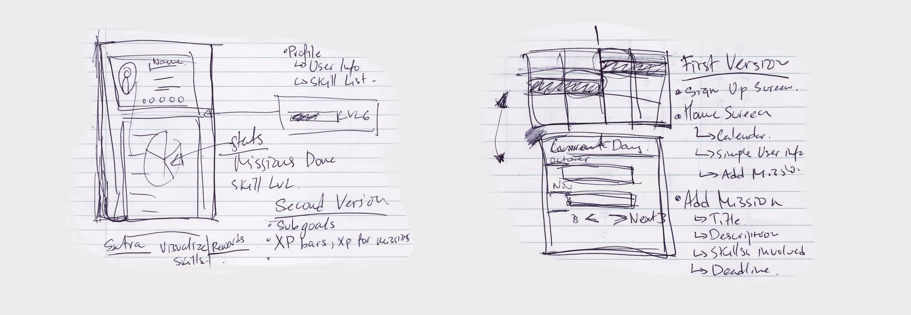
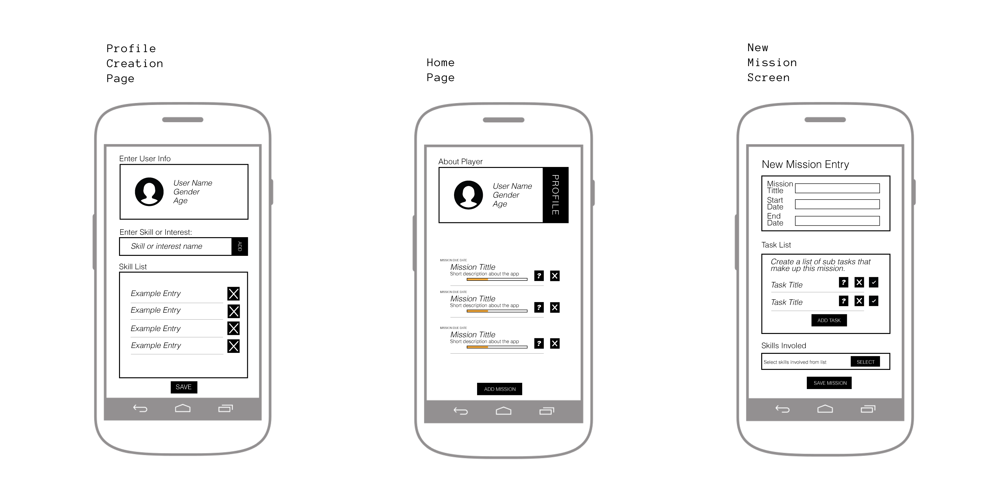

Project Mission is an Android Application that my partner, Lyn Ge, and I created as the final project for our Intro to Android Development class. Project Mission is a simple personal productivity application, but what sets it apart is that it implements some very popular video game mechanics, like setting 'missions' for yourself and 'leveling up' your skills.
This project was my first time developing a complete mobile application as well as UX/UI design.
I got the inspiration for this project from an application I had found a while back called 'LifeRPG'. The concept was the same, personal productivity application with video game elements, except that the application had been on the App Store for a while and the developer had been able to develop it to a much further point to which we didn't have enough time left in the course for. I thought that if we stripped it down to its main features, we could have enough time to create a functional and helpful application with the time we had assigned.
The first issued came from having to choose exactly which features we absolutely necessary and which we would leave to do if we had more time in the end. We were certain that the user should create their own profile where relevant information would be stored so the first thing the user must do when opening the application for the first time is create a personalized profile.
In the end, we decided that our application should consist of 3 main screens: Profile Creation Screen, Home Screen, and the Profile Screen. The profile creation screen include their name, age, and gender, as well as a list of skills and interest that the missions they would set for themselves were likely to include. After the profile creation page, the next and most important screen is the home screen, where a short summary of the user is shown as well as a list view of their ongoing missions, if there is any. From here, the user can create a mission, for which they enter a description and select the skills involved and the deadline, or they can go to their profile page. The profile page would show detailed information about the user, like their Level, statistics about missions and skills, and a list view of all the skills and interests they have added up to that point.
At the end of the course, we successfully created a working and useful application which implemented all the standard functionality we had set out to achieve, but personally, it left more to be desired. This project will be the perfect opportunity for me to continue learning more and more about developing Android applications as well as UI/UX design, and so I plan to continue working on it on my own time. I plan to work on many aspects on the application, from the leveling system and rewards, to the UI and sound, until I am happy with the state of the application.